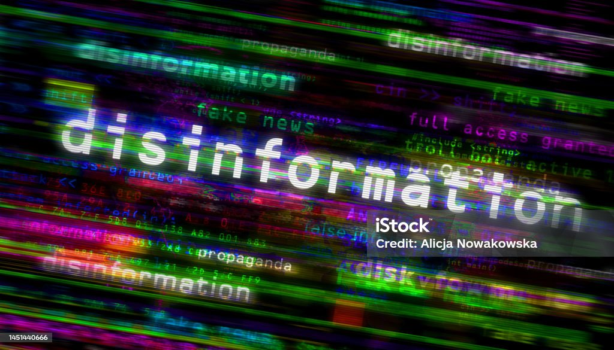

Védekezés a fakewews-ok ellen
1.Kritikus gondolkodás fejlesztése
Az információk kritikus értékelése az álhírekkel szembeni védekezés alapja. Ehhez
az alábbi lépések szükségesek:
- Kérdések feltevése: Az információ megbízhatóságának ellenőrzése
érdekében érdemes megkérdezni: Ki az információ forrása? Milyen célból
közölték? Van-e tudományos vagy hivatalos alátámasztása?
- Túlzások felismerése: Az álhírek gyakran túlzó állításokat vagy érzelmileg
túlfűtött tartalmakat használnak, amelyek célja a figyelemfelkeltés.
2.Hiteles források használata
- Elismert médiumok előnyben részesítése: Hírek fogyasztásakor előnyben
kell részesíteni azokat a forrásokat, amelyekről ismert, hogy szigorú
tényellenőrzési folyamatot követnek.
3.Információk ellenőrzése több forrásból
- Több forrás összehasonlítása: Ha egy hír fontos vagy jelentős információt
közöl, érdemes ellenőrizni, hogy más megbízható források is megerősítik-e
azt.
- Helyi és nemzetközi médiák összevetése: Egy esemény objektív megítélése
érdekében érdemes megnézni, hogy különböző országok médiumai hogyan
számolnak be róla.
4.Digitális műveltség növelése
Az embereknek tisztában kell lenniük az online információk manipulálásának
módjaival:
- Algoritmusok megértése: Fontos tudni, hogy a közösségi média algoritmusai
a kattintásokat és a megosztásokat előnyben részesítik, függetlenül a
tartalom hitelességétől.
- Fényképek és videók ellenőrzése: A manipulált képek és videók
felismerésére számos online eszköz áll rendelkezésre, például a Google
Reverse Image Search.
5.Érzelmi manipuláció felismerése
- Erős érzelmi reakciók megfigyelése: Ha egy hír túl erős érzelmi reakciót vált
ki (pl. düh, félelem, öröm), érdemes megállni és alaposabban megvizsgálni a
forrást.
- Kattintásvadász címek kerülése: Az álhírek gyakran használják a
„szenzációs” címeket figyelemfelkeltésre.
6.Oktatás és tudatosságnövelés
- Médiatudatossági tréningek: Az iskolákban és a munkahelyeken egyre
gyakoribbak a médiatudatosságot fejlesztő programok, amelyek segítenek
az információk kritikus értékelésében.
- Közösségi szerepvállalás: Az egyének és közösségek is szervezhetnek
workshopokat vagy előadásokat az álhírek hatásairól és kezeléséről.
7.Közösségi média használatának tudatossága

- •Megosztás előtti ellenőrzés: Az emberek gyakran továbbítanak híreket
anélkül, hogy alaposan elolvasnák vagy ellenőriznék azokat. Ez elkerülhető,
ha megállnak és alaposan átgondolják, hogy az információ hiteles-e.
- Hamisság bejelentése: A közösségi média platformokon lehetőség van az
álhírek bejelentésére, amelyek segítségével az algoritmusok korlátozhatják
a további terjedésüket.
8.Tényellenőrző platformok követése
Számos nemzetközi és helyi tényellenőrző oldal létezik, amely segít az álhírek
kiszűrésében:
- Snopes.com
- Politifact.com
- FactCheck.org
- Magyarországon például a Lakmusz.hu foglalkozik tényellenőrzéssel.
9.Technológiai eszközök használata
- Álhír-detektor szoftverek: Egyes böngészőbővítmények (pl. NewsGuard)
segítenek felismerni a megbízhatatlan oldalakat.
- Hírfogyasztási szokások követése: Az emberek rendszeresen
felülvizsgálhatják, hogy milyen platformokat követnek, és törölhetik azokat,
amelyek megbízhatatlan tartalmakat terjesztenek.
10.Társadalmi felelősségvállalás
- Példa mutatása: Az emberek példát mutathatnak azáltal, hogy tudatosan
fogyasztanak és terjesztenek információt.
- Közösségi normák betartása: A családok és baráti körök közös szabályokat
alakíthatnak ki az információk ellenőrzésére és megosztására vonatkozóan.
Az álhírek elleni védekezés nem csupán egyéni, hanem közösségi és társadalmi
feladat is. Az emberek felelőssége, hogy az információkat tudatosan és kritikusan
kezeljék, és hozzájáruljanak egy tájékozottabb, álhírektől mentes társadalom
kialakításához.